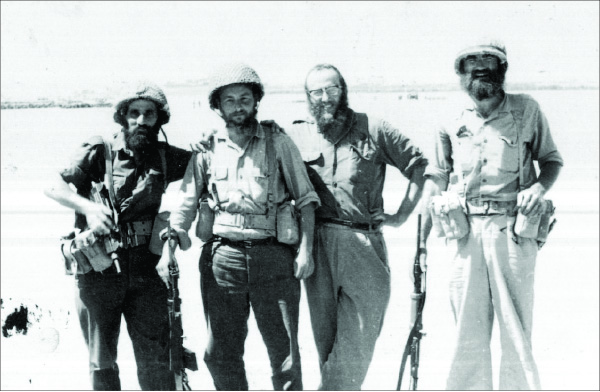

The War and the Inspiration That Followed
It is 46 years since the Six Day War, a miraculous war the Jewish people won against all odds and expectations. * They regained the holy places in Yehuda, Shomron, and the Old City of Yerushalayim. * On the eve of the war, the Rebbe’s voice was heard as the only one urging people not to be afraid and to remain in Eretz Yisroel. * Beis Moshiach spoke with four Lubavitcher Chassidim who served in the army at that time, who graciously shared their memories and impressions of that fateful time with Beis Moshiach.
Participants:
R’ Avrohom Meizlich
Kfar Chabad
R’ Dovid Lesselbaum
Kfar Chabad
R’ Zushe Gross
B’nei Brak
R’ Yaakov Shnur
Yerushalayim

On 26 Iyar 5727 (June 5, 1967), at eight in the morning, an IDF spokesman announced, “Since early morning, heavy battles have been taking place on the southern front against Egyptian air forces and armored corps. They began moving towards Israel, and our forces went out to stop them. IAF planes are waging battles with Egyptian planes.” The war had begun.
In an instant, the tremendous tension that preceded the war exploded into war as Arab armies threatened tiny Israel from every side, Egypt, Syria, Jordan. With the first movement of planes, tanks and artillery pieces, the Six Day War had begun on three fronts, each distant from one another.
People were terrified. Only the Rebbe, Navi HaDor, repeatedly reassured us that there was nothing to fear. The Rebbe’s prophetic optimism flew in the face of all the warnings of the army and security experts. At the Lag B’Omer parade, the Rebbe already publicly referred to the war:
“There is another special inyan and horaa under the current circumstances, in which your brothers and sisters in the Holy Land, Eretz Yisroel are in a situation wherein Hashem defends them and sends them His blessing and success and salvation in great measure, so they will go out – and indeed they will go out – from this current situation with success, with great victory, with miracles and wonders.”
About a week before the war began, the Rebbe sent a telegram to the residents of Kfar Chabad. This telegram was widely publicized in the Israeli newspapers:
“The Vaad of Kfar Chabad, led by the rav, have merited that they are among many tens of thousands of Jews in Eretz Yisroel that has Hashem’s eyes upon it constantly, and surely the Guardian of Israel neither slumbers nor sleeps.”
Many Lubavitcher Chassidim were called up to the Reserves, which were fighting on all fronts, and they brought the Rebbe’s prophetic announcement of victory. They also carried out Mivtza T’fillin which had just begun.
We spoke with four of Anash who were called up at that time, and they shared their experiences with us.
Where were you when the war began?
R’ Meizlich: I was a young married man with young children. At first, I wasn’t called up, because I was a principal in Nes Tziyon and got a deferment. However, as the tensions rose I was also called up, as were many others. Like many other religious soldiers, I served in the Chevra Kadisha. People were tremendously frightened and anticipated the worst. Today it can be told that they prepared 30,000 temporary graves. Public parks were designated by the military Chevra Kadisha to be turned into temporary graveyards. As someone who remembered the war in ‘48, a war which cost us 6000 korbanos, people anticipated the worst. This was the general feeling throughout the country.
R’ Shnur: I served in the army in the Reserves after I had enlisted in 5722. After the war, I received a medal. I was an infantry soldier. In the period before the war, I taught in a Chabad school in the Ir Ganim neighborhood in Yerushalayim. I was one of the founders of that school.
R’ Gross: I was living in Kfar Chabad at the time. About two weeks before the war, I was called up on Shabbos. It was a few minutes after I had made Kiddush Friday night. I had started eating the meal when there were knocks at the door and I was informed of a general call-up.
I didn’t know whether I was permitted to take my t’fillin. I asked them for a little time and I ran to the rav of Kfar Chabad, R’ Shneur Zalman Garelik, to ask him. He said I should not take my t’fillin on Shabbos.
I left feeling uncomfortable about it, but since this was the rav’s p’sak din, I followed it. All the residents of Kfar Chabad came out to see what was going on. The neighbors escorted me and the others who were called up. I did not want to get on the military vehicle within Kfar Chabad.
Another three men from Kfar Chabad were drafted into our unit: R’ Aharon Tenenbaum, R’ Dovid Lesselbaum, and R’ Sholom Feldman. We served in the 81st Division in the 11th Brigade under the command of General Yisroel Tal (Talik).
We spent those two weeks of preparation at Kibbutz Nachal Oz. Those were a tough two weeks. It was an extremely tense waiting time without our knowing what would happen next. In the meantime, I got my t’fillin which my wife sent through the town officer.
R’ Lesselbaum: I served in Khan Yunis. We were five Lubavitchers including R’ Zushe Gross, R’ Aharon Tenenbaum, R’ Shlomo Horowitz, and R’ Sholom Feldman. I remember that the soldiers were very afraid, and for good reason. In Egypt they had Russian scientists and we knew that their weapons were much improved over the war in 5717/1957 when we conquered the Sinai.
They came for us on Friday night. That Shabbos, I had high temperature and couldn’t go. They knew that I wasn’t a malingerer. Two days later, when my temperature went down, I decided to join my unit.
I joined up with my unit at Kibbutz Magen, opposite the Gaza Strip. The waiting period was harder than the actual war.
There were threats about wiping out Israel, G-d forbid. Then the Rebbe said there is nothing to fear and not to leave the country. How did people react to this?
R’ Gross: Before the outbreak of hostilities, during the waiting period, a letter came from the Rebbe that was sent to all the soldiers in the IDF. Tens of thousands of copies were distributed. The letter began as follows: You have merited being among many tens of thousands of Jews in Eretz Yisroel that has Hashem’s eyes upon it constantly, and surely the Guardian of Israel neither slumbers nor sleeps. Hashem is at your right hand, Hashem will protect them and all the Jewish people from now and forever.
This letter provided great encouragement to the soldiers, especially to Lubavitcher soldiers, since at this time, the feeling throughout the country was that we had come to the end of the line; we were a lamb amongst seventy wolves.
R’ Meizlich: When we first started preparing for war, at the beginning of Iyar, there was a bachur in yeshiva in Kfar Chabad from England. His father sent him a telegram saying he had a return ticket for him, but he didn’t know what to do. Thousands of yeshiva bachurim left the country as well as many thousands of families. He asked the Rebbe what to do and the Rebbe told him not to leave.
The Rebbe gave tremendous confidence to the Jewish people. The newspapers at the time prominently noted that the Rebbe told his Chassidim not to leave the country.
R’ Shnur: It was a terrible feeling on the eve of the war. We, as Chabad Chassidim, had it easier. The Rebbe was very encouraging of the nation and promised miracles and wonders.
Do you remember how people became so inspired as a result of the war?
R’ Meizlich: On the Shabbos following the war, we had an especially joyous farbrengen in the home of R’ Meir Friedman in Kfar Chabad. All those who participated in the war and were drafted were there. R’ Dovid Morosov (may Hashem avenge his blood), who was killed a few days later, was also there. There was a grand Kiddush to celebrate the fact that we had all returned alive, and of course, for the miracles that Hashem did for us.
It was very crowded. Mashke flowed like water and the simcha reached the skies. There was the feeling that these were extraordinary times. We had seen supernatural miracles and wonders.
When I compare this atmosphere with that at the start of the war, it’s like the difference between heaven and earth. I remember that after the war began, we got to work. Every day we received many dead soldiers. I was attached to the burial service in Kibbutz Ruchama in the south where there was a command center for the Chevra Kadisha. For me, the images and memories of the war are mainly the terrible sights. We would get soldiers with direct hits and it was rough.
R’ Gross: I remember that in the midst of the war, an officer showed up, an ardent kibbutznik, and he asked me for a kippa. I asked him what happened and after putting on the kippa he announced that the Kosel had been liberated. He was not religious but the miracles had inspired everyone.
There was a story I’ll never forget. I was in a bunker at Kibbutz Nachal Oz before the war began. The shelling began at 7:50 in the morning. They fell directly into the kibbutz barn. Heaven and earth mingled. A black cloud of smoke rose up from the kibbutz and you couldn’t tell if it was day or night. The fields began to burn. I stood in the bunker together with a Reservist. He was a new immigrant and his name was Adler. He was young and he asked me in Yiddish, “Where are your boxes?” He was referring to t’fillin.
I told him that they were in my backpack. He did not know how to put t’fillin on himself and I did my best to help him. Then I heard him daven in Yiddish, a prayer I’ll never forget. He spoke to Hashem with the utmost simplicity, from the depths of his heart: “What do You want from me? I remained alone after the Holocaust. I married and have a one-year-old daughter whose name is Bracha. Who will educate her? How will there be a name and remembrance of my family who all perished in the Holocaust?” He said this while wearing t’fillin.
As he davened, an officer ran over to us and yelled that we should get into the military vehicles. He screamed at us – what are you doing – organizing shuls here?! When we were in the vehicle, they all came over to me and wanted to say Shma Yisroel. They kissed the t’fillin. The rare inspired moment was palpable.
After the war, there was a tremendously elevated feeling. As great as the danger had been, that is how great the victory and the emuna were. The gifts that Hashem had given us in liberating the country from our enemies, Kever Rachel, Sh’chem, Chevron, Kever Yosef, Har HaBayis along with the Kosel, thrilled everyone.
R’ Lesselbaum: One day during the war, as we conquered Khan Junis and fought the Fedayeen, we heard on the radio (belonging to one of the soldiers) how they blew the shofar with the liberation of the Kosel and Har HaBayis. All the soldiers stood there and we burst into song.
How did the soldiers react to Mivtza T’fillin?
R’ Shnur: Looking back at the results of the Six Day War, this was definitely one of the Rebbe’s biggest revolutions – being mekarev tens of thousands of Jews. Even before the war began, the Rebbe said to put t’fillin on with the soldiers and he announced Mivtza T’fillin.
We put t’fillin on with the soldiers and they were so moved. People who had never put t’fillin on before in their lives put on t’fillin for the first time. They came on their own initiative.
R’ Lesselbaum: After I was drafted, before the war began, I heard that the Rebbe said to put t’fillin on with people. I didn’t know the details; I just knew that I had to put t’fillin on with people. Today, it seems simple but back then it took nerve. I thought: How can I ask someone to put on t’fillin? A day went by and I decided I just had to get started, even if it seemed odd, especially to those from HaShomer HaTzair kibbutzim.
I went to the recreational club which was full of soldiers. I put the t’fillin on the table and before I could say anything, a long line of soldiers and civilians had formed in order to have me help them put on t’fillin. I saw that the apparent difficulty with the mivtza was just in my head…
R’ Gross: There was the feeling that this is G-d’s will and that a channel in this regard had opened. As Chassidim, we had no doubt that we had to carry this out without question. The amazing thing is that others also accepted it matter-of-factly. G’dolei Yisroel and the irreligious public accepted it, and you hardly had to convince anyone. The Rebbe just gave the order and it was well accepted by the public. The inspiration generated by Mivtza T’fillin definitely led to an enormous revolution.
R’ Meizlich: After Lag B’Omer, we heard the horaa from the Rebbe about Mivtza T’fillin. We who served in the army carried out the order enthusiastically, since the Rebbe said this was in order to succeed in battle, “and all the nations of the earth will see that the name of G-d is called upon you, and they will fear you.” The soldiers responded positively; nobody opposed it. We didn’t look at it as a “campaign,” but accepted the order and knew we had to carry it out. I remember going over to soldiers and saying, “Come my friend, put on t’fillin. It’s like an armored helmet.” They all put on t’fillin – Kibbutznikim, irreligious, everyone. Tens of thousands of Jews put on t’fillin at that time.
Did any of you report to the Rebbe about what you experienced and saw during the war?
R’ Lesselbaum: A year later, in Tamuz 5728, I went to the Rebbe. The Rebbe spoke very sadly about how certain groups celebrated Yom Yerushalayim and Yom HaAtzmaut with the recitation of Hallel. In that yechidus, the Rebbe said there were rabbanim who opposed the saying of Hallel and especially with a bracha. Among them he mentioned Rav Nissim.
I got up the courage to say that there was a huge simcha over the victory of the Six Day War. The Rebbe said that in order to express the joy, it had to be done through “an increase and strengthening of the matters of He who wrought the miracles.” The Rebbe spoke very sadly about how the special opportunity and inspiration had not been utilized.
After the yechidus, they told me I should write it down. I did, and that night I submitted it to the Rebbe for editing. A few hours later I got it back. The Rebbe deleted some things and made some corrections. Unfortunately, that edited yechidus disappeared over the years; I don’t know where it is.
R’ Gross: After the war, I wrote a detailed report to the Rebbe about my war experiences. The Rebbe wrote me back in his handwriting: “many thanks for the report.” Then in parentheses, he added, “even though it is very short.” Although the Rebbe complained about the brevity, the letter was five pages long! Afterward, someone told me that the Rebbe said about the Six Day War that the Sh’china was below ten handbreadths at El Arish.
In general, the Rebbe’s encouragement at that time helped me very much. Even before Lag B’Omer, the Rebbe said not to be afraid and not to frighten others even though the situation in Eretz Yisroel was terrifying. Because of the great fear, the Rebbe’s words made a tremendous impact. Everyone wanted to know, “What does the Rebbe say?”
In 5730, I went to the Rebbe for Tishrei. All those present who had been drafted to serve received the special honor of a hakafa in the Rebbe’s presence.
***
R’ Meizlich concluded with a story from the war.
“They said about R’ Meir Friedman (a”h), that when his unit got orders to go north from Yerushalayim, it was Shabbos. R’ Meir, as a Chassidic Jew and an obedient soldier, stood on top of the command car with a bottle of wine in his hand and sang U’faratzta. It was quite a sight – a Jew with a flowing beard traveling on Shabbos and singing happy Chassidic songs.”
Sgefen. "The War and the Inspiration That Followed." Beis Moshiach, no. 880 (May 22, 2013).